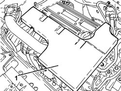
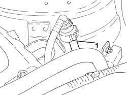
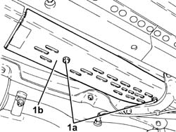
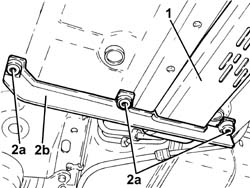
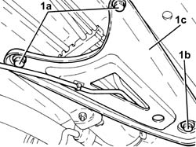
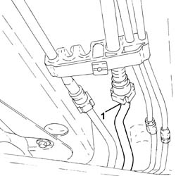
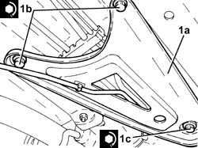

1080E66 AIR INTAKE CHAMBER FUEL VAPOUR INTAKE PIPE - R.R.
- Path
- Procedures > 10 ENGINE > 1080 EMISSION CONTROL SYSTEM > 1080E EVAPORATION CONTROL SYSTEM > 1080E66 AIR INTAKE CHAMBER FUEL VAPOUR INTAKE PIPE - R.R.
- Kind
- repair procedure (removal / refitting; the operation number is the code)
- Applies to
- engines: 2.2; all production periods
- Interactive page
- https://sloeber94.github.io/elrnDB-fCrm/en/#/194000376
Applies to: engines: 2.2; all production periods
 Removing
Removing
 Refitting
Refitting- Position the vehicle on a lift.
1. Remove the sound insulation cover fastened to the engine by three pins.

Applies to: engines: 2.2; all production periods
1. Disconnect the rapid connector for the air intake chamber fuel vapour inlet pipe, fuel vapour solenoid valve side.

Applies to: engines: 2.2; all production periods
Op. 4450B04 RIGHT FRONT WHEEL - R.R
1. Working underneath the vehicle, undo the bolts (1a) and remove the pipe front protection (1b).

Applies to: engines: 2.2; all production periods
1. Undo the bolts and remove the pipe rear protection.
2. Undo the bolts (2a) and remove the bracket (2b).

Applies to: engines: 2.2; all production periods
1. Undo the bolts (1a), loose the bolt (1b) and turn the underbody reinforcement (1c) sideways.

Applies to: engines: 2.2; all production periods
1. Disconnect the rapid connector for the air intake chamber fuel vapour inlet pipe, intermediate fuel vapour pipe side.
- Remove the air intake chamber fuel vapour inlet pipe working via the right front wheel arch.

Applies to: engines: 2.2; all production periods
Refitting
Removing- Place the air intake chamber fuel vapour inlet pipe in its housing and connect the rapid connector.
1. Place the underbody reinforcement (1a) in its housing and secure it tightening the new bolts (1b) and (1c) to the recommended torque.
Component | Fastening | dia | Value (daNm) | Validity |
|---|---|---|---|---|
Underbody reinforcements | Inner bolt (to replace) | M12 | (bodyshell side) 8.1 - 9.9 + 45° |
Component | Fastening | dia | Value (daNm) | Validity |
|---|---|---|---|---|
Underbody reinforcements | Outer bolt (to replace) | M10 | (bodyshell side) 5.0 - 6.1 + 45° |
Component | Fastening | dia | Value (daNm) | Validity |
|---|---|---|---|---|
Underbody reinforcements | Bolt (to be replaced) | M12 | (front suspension frame side) 9.0 - 11.0 + 90° |

Applies to: engines: 2.2; all production periods
- Fit the bracket in its housing and secure it using the bolts.
- Place the rear pipe guard in its housing and secure it using the bolts.
- Place the front pipe guard in its housing and secure it using the bolts.
Op. 4450B04 RIGHT FRONT WHEEL - R.R
- Connect the rapid connector for the air intake chamber fuel vapour inlet pipe, fuel vapour solenoid valve side.
- Place the sound insulation cover back in its housing and secure it to the engine using the three pins.
- Remove the vehicle from the lift.